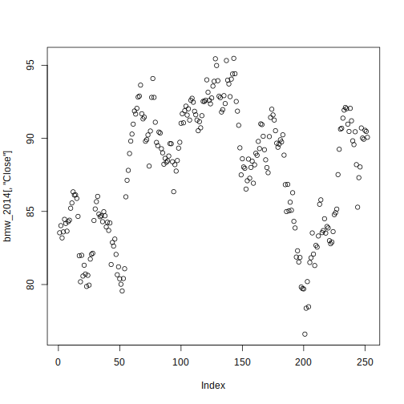
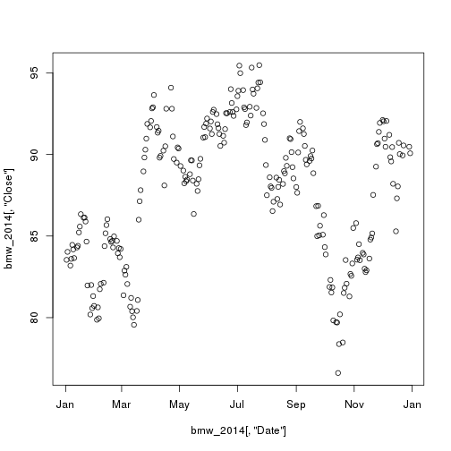
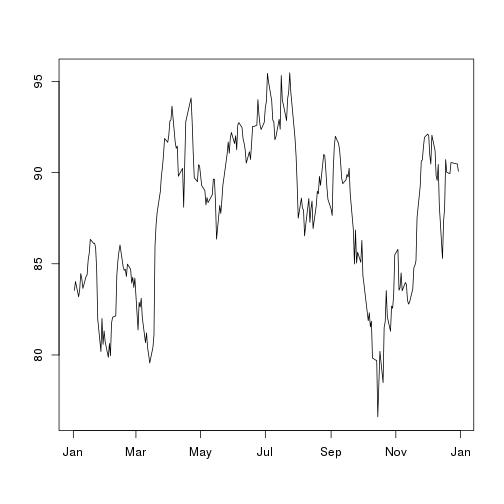
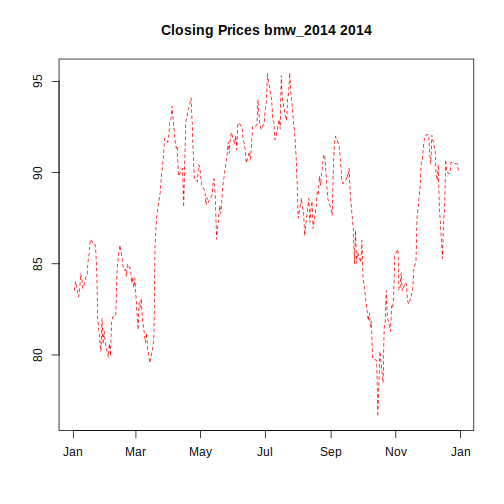
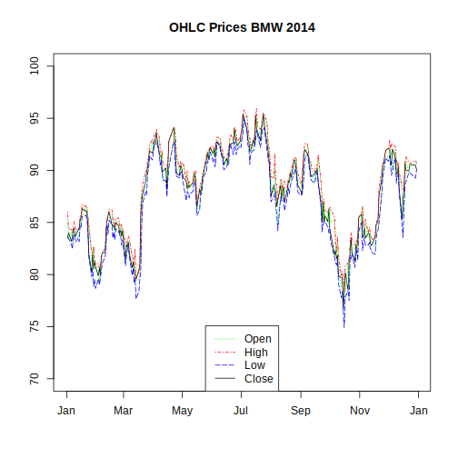

plot() and lines()The base R plot() function is a good starting point for visualization our time series.
plot(x, y, ...)
The mandatory argument x describes the coordinates of the points in the plot, y is optional if x is already an appropriate structure.
The three dots ... stand for further graphical parameters which can be passed to methods.
Additional informations can be found at the help page of the plot() function (?plot in the R console).
Now suppose we have downloaded historical closing prices for 2014 for the BMW equity from Frankfurt Stock Exchange as a data.frame.
(See chapter Using Quandl with R)
We will start with plotting the closing prices. The first function call uses only the mandatory argument, the second explicitly specifies \(x\) and \(y\) values.
plot(x = bmw[,"Close"])

plot(x = bmw[,"Date"], y = bmw[,"Close"])

These function calls produce point plots with the closing prices on the \(y\) - axis but the \(x\) - axis differ.
In the first plot the index numbers of the \(y\) - values are represented on the \(x\) - axis so you can see the length
of the object. Due to the fact that the Date column contains entries of class Date the ticks on the \(x\) - axis in the
second plot are labelled with the names of the months instead of index numbers.
We change from a point plot to a line plot which is often much more appropriate for time series and remove the labels for both the \(x\) - axis and \(y\) - axis.
plot(x = bmw[,"Date"], y = bmw[,"Close"], type = "l", xlab = "", ylab = "")

Now we add a title to the plot, change the linetype from solid to dashed and color it red.
plot(x = bmw[,"Date"], y = bmw[,"Close"], type = "l", xlab = "", ylab = "",
main = "Closing Prices BMW 2014", lty = "dashed", col = "red")

A list about the different possible colors and linetypes can be found at the help page of par()
in the Graphical Parameters section.
With the lines() function it is possible to plot two or more time series together.
We want the Open, High, Low and Close Prices all together in one plot.
For a more readable graphic we also add a legend and set the limity for the \(y\) - axis to 70 and 100.
plot(x = bmw[,"Date"], y = bmw[,"Close"], type = "l", xlab = "", ylab = "",
main = "OHLC Prices BMW 2014", ylim = c(70,100))
lines(x = bmw[,"Date"], y = bmw[,"Open"], col = "green", lty = "dotted")
lines(x = bmw[,"Date"], y = bmw[,"High"], col = "red", lty = "dotdash")
lines(x = bmw[,"Date"], y = bmw[,"Low"], col = "blue", lty = "longdash")
legend("bottom",
legend = c("Open", "High", "Low", "Close"),
col = c("green", "red", "blue", "black"),
lty = c("dotted", "dotdash", "longdash", "solid"))
